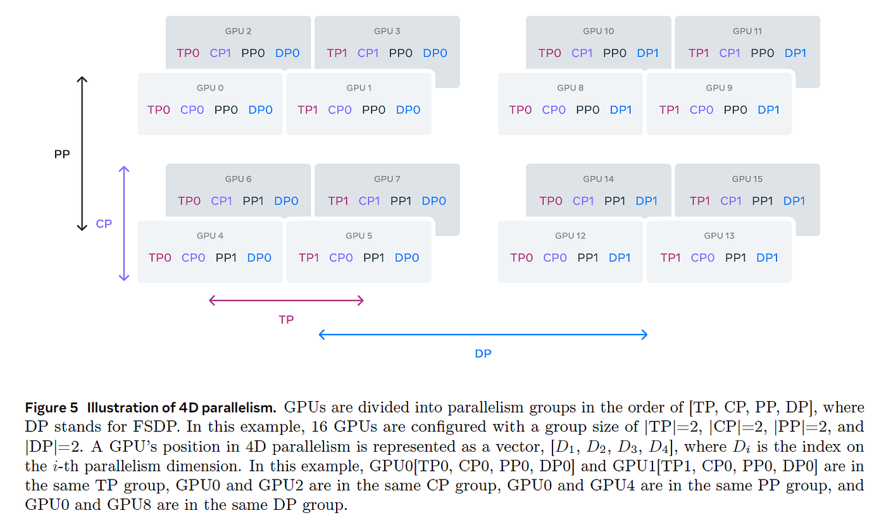

几个星期前我们从最开头出发，先学会在一张GPU上把一个小模型训起来，一步一步往深处爬，直到把Llama-405B、DeepSeek-V3这个量级的大模型如何被摊上成千上万张GPU的办法都走完。如今你手里已经攒起一整张分布式的图：知道什么时候搬权重、什么时候搬梯度，知道张量并行把矩阵拆给几张卡再拼回来，也知道流水并行里气泡是怎么省出来的。到这一篇，我们不再铺新原理，而是替整趟旅程打一个结：把这本书用力收拢到最后一句话，再告诉你收尾之后，自己往哪儿接着走。随文也会把那篇原文附录里垫底的几块速查一并带给你，当作往后动手时的随身参考。
亲爱的读者，恭喜你走到结尾。这一路我们从「在单张GPU上训一个简单的模型」起步，一路走到把Llama-405B与DeepSeek-V3这种体量的大模型，用尽各种精细的手艺，在数千张GPU上高效地训出来的程度。走到今天，你已经能带着（相对的）从容去读一张图，比如Meta那张著名的Llama-3四维并行配置：它把405B参数的模型，沿着数据并行、流水并行、张量并行与上下文并行四个维度摊开，配出每个维度该切多少份、权重复制几份、长上下文的序列又在纵向与横向各被切成几段，层层嵌套却条理分明。下面这张原文用来收官的全景图，正是检验你这一路修炼成不成的最好考卷。

把一大片GPU编成网络、去高效地训一个大语言模型，从来不是随随便便一句「多卡并行」就能交代的。这个结收束在我们反复打磨的那三件事上。一是替眼前这个模型与这份集群规模，挑对并行的切法：数据、流水、张量、序列乃至专家几套并行各有各的脾气，挑对了内存与带宽都舒服，挑错了气泡与同步空转立刻找上门。二是但凡通信能躲进计算的影子里，就绝不让它白占车头：把一趟all-reduce或参数广播的功夫藏进当下这层的前向或反向计算里，让显存与以太网同时当班的思路，几乎本书每一章都在反复上演。三是给那些扛大头的算子亲自写量身定制的内核：把内存布局、块内共享、线程束的步点都踩准，一个算子才能在芯片上顶着峰值的速度跑完。
你到现在可能仍觉得，这套本事既偏门又小众，只属于那群天天预训练大模型的人。要说放在历史上，这话可能一度是成立的；可如今AI开源社区与模型尺寸一起疯长，凡是做推理、做微调、做训练的，越来越多人都得借分布式的力，懂得它的圈子正以肉眼可见的速度扩成主流，那些分布式训练的部署与实践，也随之一年比一年常见。也正因如此，把这摊东西往深里挖，如今看来格外赶得上趟。
这本书讲的是一场实打实的学习之旅，可并不只是读者你一人在学。为成书，团队在GPU集群上跑过的基准数以千计，比当初预想的要吃力许多：替每一次实验配好正确的并行参数、把脚本在集群调度与多机网络下调顺、再排除那一串串只在特定规模才现形的怪故障，每一样都在磨人。这条辛苦代价换来的，是全书每一处剖面上都尽量压着实测的数字与真实的取舍，而不是停留在黑板上的推演。
正因为它跑遍了几千次真实验证，这套书才更像一份「作业现场的手记」而非空谈手册：讲到什么策略省多少显存、藏得住多少通信，背后大都有一行行真实跑出来的数字撑腰。这份作者自己的笨功夫，也给你传递了一个信号，书里的门槛与代价都不是虚的：碰到看似不合理的性能差异时，先别急着怀疑书，先去核对是不是自己那套规模没喂到那条临界点上。
如今你对主要的分布式训练概念已经有了相当完整的俯瞰，但坦白讲，其中的不少工具与技巧我们也只是轻拂过它的皮毛。往深里钻的路子很多，作者格外推荐这三步。其一是挑几篇里程碑级别、或最近的重量级论文，逐字啃一遍，论文与博客、书籍的整张推荐清单，都收在全文末尾的参考资料里等你按图索骥。其二是从零动手，把一个算法亲手实现一遍，很多方法往往只有在你亲自把它写出来的时候，才真正在脑子里「咔哒」一声接通。其三则是挑一个用得最顺手的框架钻进去开始贡献，修bug、回issue、加一项新特性都行，这几乎是进入任何机器学习领域的黄金入口。
这三条路彼此并不冲突，甚至常常彼此成就：论文给你地图，手写实现帮你把地图踩实，贡献开源则把你自己嵌进这张持续生长的图里。无论你最终从哪一条起步，我们都希望这本书能帮你在分布式训练这条路上正式上路，让你有一天也能在自己的GPU集群那一片均匀的轰鸣声里，把新一代理想中更好的模型训出来。
正文讲完了策略与手艺，原书的附录则垫在最后，专门回收那些写作过程里反复要用、却又不便时时打断讲解的基础素材。它分四块。A0是一节并行编程速成课，把Broadcast、Reduce与AllReduce、Gather与AllGather、Scatter与ReduceScatter这一个个集体通信原语，连同环状all-reduce的构成法、还有barrier同步，用可以照跑的PyTorch小例程逐一讲透，底层那套「多节点到底怎么彼此传话」的完整词库都在这。A1顺手介绍了分布式训练的性能剖析，既讲怎么拿剖析器盯内核，也陪你把自定义的内核编译成可分析的对象。A2给出一整套训大模型时常用的数量级估算。到A3，则用同一套公式，把前几章里反复念叨的「通信与算力的重叠」做成了能直接算账的数学。下面我们就从A2与A3里各挑出最有带得走价值的部分，替你抄一份随身版。
当我们谈论显存或算力时，习惯数的是「元素个数」，也就是张量里到底装了多个数；要换算成真正的字节，再乘上每一个数占的字节数就好，比如bf16每个数占2字节、fp32占4字节。在这把尺子下，原书附录给了这样一串粗估的底子。一个batch从前到后要喂进去的token数是序列长度乘上微批大小seq乘mbs；单层激活（也就是那层隐状态的张量）的大小约为seq乘mbs乘h个元素。模型里每一张权重矩阵，比如各个线性层里的，都约莫是h的平方个元素，梯度的个量与它严格同号。要是用Adam这类带一阶二阶矩的优化器做混合精度训练，它要为每个权重矩阵各存一份fp32的动量、方差，外加一份fp32的主权重副本，合起来每个权重矩阵的优化器状态就约莫是6倍h平方。
把每条Transformer块里参数的账也拢一拢：注意力那边，QKV三份投影是3倍的h平方，输出投影又是1份h平方；MLP若是带GLU门控的，门的两个上投影（各是一张h乘4h的矩阵）占8倍h平方，下投影那张4h乘h的矩阵再占4倍h平方。于是每条块合计，带GLU的MLP是16倍h平方，不带GLU则落到12倍h平方；把它乘上块数，就是整套主干的总参数量。再来一轮还补得上的边角账：输入embedding约占词表大小乘h，若语言模型头不与它共享那再添一份同样的量，位置编码若单独存放的话约是最大序列长乘h。至于前后向的算力，一条很粗的估算就给到：一次前向约莫是2乘token数乘参数量，反向则是它的两倍，即4乘token数乘参数量。记牢这串，往后要摸模型或显存的大概个儿，随口就能算出个数。
附录A3用上一节的公式替我们回答本章反复追问的那个问题：一次通信到底能不能整个钻进一段计算的缝隙里不被看见。判据落在两笔账之比上：把这个策略要搬的数据量除以有效带宽，得到通信耗时；把当下能并行算的那段算力除以峰值flops，得到计算耗时；比值压到1以下，通信就能被这段算力盖得严严实实。把四条主线策略各算一遍，会得到四张截然不同的脸。
数据并行那条线，梯度的总量基本就等于参数量，分摊到每个all-reduce的桶（默认按25MB一份切）上传完的时间，看的是这套公式：通信时间等于桶大小乘2倍的（DP减一）除以DP再除以峰值带宽；计算时间则是4乘token数乘参数总量除以峰值flops。两者一比，决定权交给「参数总量比上两倍token数」与「峰值flops比上峰值带宽」这两项，前者反映模型有多重，后者反映这台机器偏重算还是偏重传，比值不大时通信就能踏实藏好。
ZeRO-3（也就是FSDP）那里，参数与梯度都按流水切到各张卡上：每一层要拉回参数、前向与反向共about两步all-gather，反向再加一步把梯度reduce-scatter回去，单层合计约3份（16h方除以DP）的通信；若拿当下这层32乘seq乘mbs乘h方的前向算力去打底，那么能藏住的那项判据，落在1除以（2乘seq乘mbs）乘（DP减一）比DP再乘flops比带宽：可见序列越长、微批越大，这趟参数搬运越能妥当地藏进下一层的计算里。
张量并行这边，通信的本体是激活而非权重：每个纵向线性前向要all-gather一回seq乘mbs乘h除以张量并行的激活、反向再reduce-scatter回去，每条块的账合计8份这样的量；拿紧接着的下一个线性的计算去打底时，判据却出奇地干净：比值只由隐藏维h与张量并行度决定，跟序列长、批大小统统无关，等于（张量并行减一）比2h再乘flops比带宽。流水并行则把激活与梯度在相邻阶段之间来回递：每条微批前向后向各收2份seq乘mbs乘h，合计每条微批4份、再乘上累积梯度步数；让它与下一流水阶段计算重叠时，判据同样与序列长、批大小脱钩，只由隐维h、下一阶段层数与硬件的flops对带宽之比说了算。
把这四条判据叠起来看，结论其实很统一也很好记：通信能否瞒天过海，取决于它和「真实在算的那段算力」的身量对比，而决定这对身量的，常常是隐藏在层size、切分度这些结构参数，外加机器本身的flops与带宽之比。闲来排布并行时，先拿这几条比一比，往往能在大规模试跑之前就把会翻车的路提前避掉。
| 并行策略 | 通信本体 | 判据与谁相关 | 关键结论 |
|---|---|---|---|
| 数据并行DP | 梯度（按25MB桶切） | 参数量比2×token数，及flops比带宽 | 参数越沉、比值越大；压力小则通信可被计算完全盖住 |
| ZeRO-3 (FSDP) | 每层拉参与回梯 | 1/(2·seq·mbs)，及flops比带宽 | 序列与微批越长越容易被藏进当层计算 |
| 张量并行TP | 激活 | 仅(h, TP) 与flops比带宽 | 与序列长、批大小彻底无关 |
| 流水并行PP | 级间激活与梯度 | 下一级层数与flops比带宽 | 与序列长、批大小彻底无关 |
原书在收尾时给自己搭了一套完整的延伸书架，足够你往任意方向扎深。里程碑级的论文在最上层：讲张量并行起源的Megatron-LM、把DeepSpeed与Megatron揉进一台机的Megatron-Turing NLG 530B、拿到几百项任务上跨能力表演的PaLM、一人吃掉文本图像音频视频的Gemini、Llama 3那支herd-of-models，以及首开FP8大规模预训练的DeepSeek-V3。再往下一层是把这些技术落成代码的训练框架：接各种并行的nanotron与Megatron-LM、有ZeRO三段与各式并行的DeepSpeed，也有FairScale、ColossalAI、torchtitan、GPT-NeoX、LitGPT一堆，乃至让集群与集群协作训练的OpenDiLoCo。
调试与诊断的书架上，作者把速度剖析、显存剖析、以及立在真实例子上的显存漫游、TensorBoard Profiler一路摆开。分布式技术那层就更厚实了：数据并行的来龙去脉、ZeRO与其PyTorch化身FSDP、张量与序列并行加选择性重算、流水并行与其广度优先的排法、造了环状all-reduce的百度手记、把ring与flash注意力揉到一起的实现与教程、ZeRO对3D的那场取舍大课、混合精度训练的开山论文，还有把6D网格并行的通信串成动画的文章。若你的兴趣在硬件与集群本身，书里还替你约了DeepSeek那套一万张PCI显卡的萤火集群报告、Meta的2.4万卡H100之舱、百万H100集群的厂商账，以及给人类看的CUDA词表。而更低照面却也最干货的底层杂集里，藏着Stas的工程手册、BLOOM与OPT两份真实训练日志、GPU Mode那群社区、JAX版《把模型做大》、一段约五百行的干净FSDP，与Horace He让「GPU咆哮起来」的一堆文。想学新的你，总能从这书架随手抽起一本。
参考：https://huggingface.co/spaces/nanotron/ultrascale-playbook